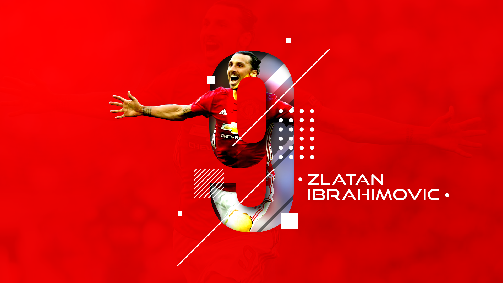
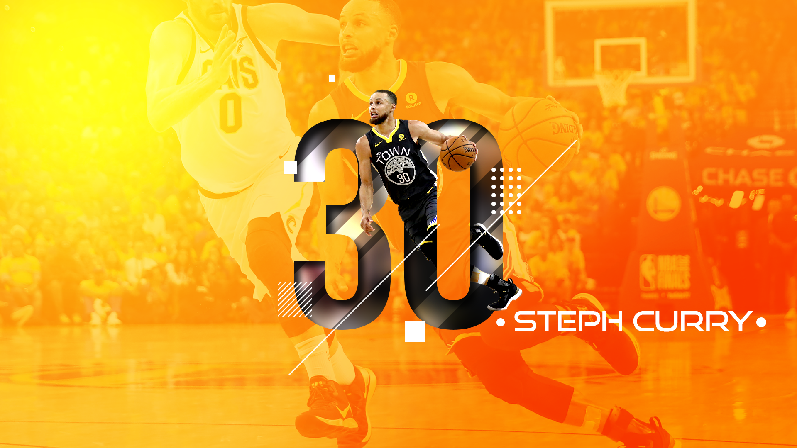
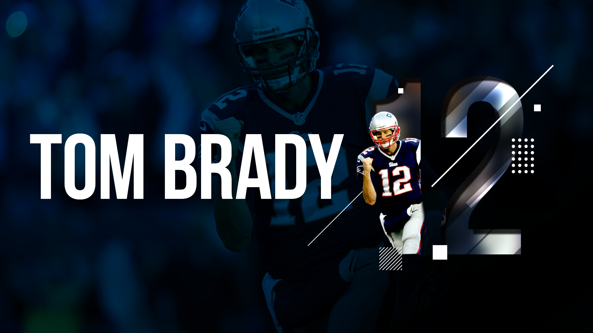

This sports poster series came from my excitement over the aesthetic. The bold shapes and colors combined with fierce in-the-moment photographs make for electrifying visuals. This was my first time practicing the aesthetic and I will probably practice crafting some of the techniques into other industry aesthetics to add some bold flavor.
  